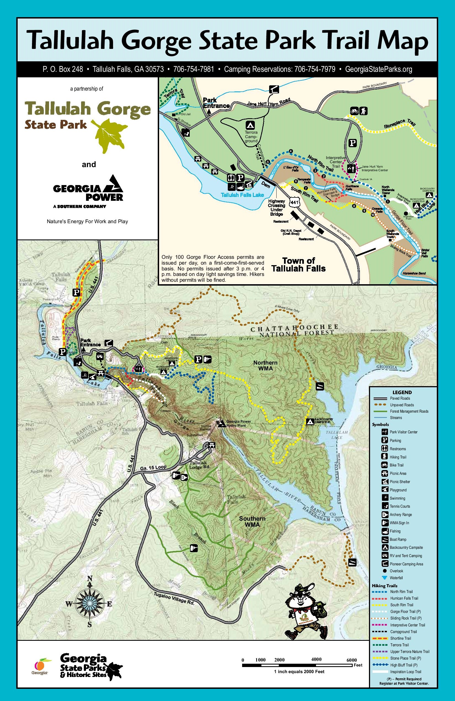

- Cloudland Canyon
- Fort Mountain
- Redtop Mountain
- Amicalola Falls
- Vogel State Park
- Tallulah Gorge
Legend
Tallulah Gorge State Park
About the trail:
One of the most spectacular canyons in the eastern U.S., Tallulah Gorge is two miles long and nearly 1,000 feet deep. Visitors can hike rim trails to several overlooks, or they can obtain a permit to hike to the gorge floor (100 per day, not available during water releases). A suspension bridge sways 80 feet above the rocky bottom, providing spectacular views of the river and waterfalls. Tightrope walkers have twice crossed the gorge, and visitors can still see towers used by Karl Wallenda. A paved path follows an on old railroad bed, perfect for strollers and bicycles, while mountain bikers can test their skills on a challenging 10 mile trail.
Exhibits in the park’s Jane Hurt Yarn Interpretive Center highlight the rich history of this Victorian resort town, as well as the rugged terrain and fragile ecosystem of the area. The persistent trillium, monkey-face orchid and green salamander are protected species found within the gorge. An award-winning film takes viewers on a dramatic journey through the gorge, including footage of rock climbers and kayakers. A gift shop offers snacks, jewelry, toys, books, walking sticks, clothing and more.